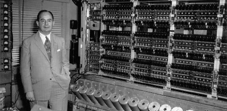

La majoria d’ordinadors actuals utilitzen la mateixa estructura.
Encara que és una estructura, tradicionalment se la coneix com a Arquitectura de Von Neumann.

Els ordinadors són capaços de resoldre diferents tipus de problemes.
Cada problema es resol amb un programa escrit específicament per a resoldre eixe problema.
Els programes estan formats per instruccions les quals estan convenient col·locades pels programadors perquè
seguisquen uns passos amb una lògica que concloga en la resolució del problema.
Les instruccions que formen un programa s’executen de manera seqüencial, després d’executar-se una instrucció
s’executa la següent (com vorem esta seqüencia es pot trencar).
Les instruccions dels programes i les dades que estos utilitzen estan en tots junts en la memòria.
En l’arquitectura de Von Neumann l’ordinador s’estructura en les següents unitats funcionals:
CPU, memòria principal, unitats d’entrada i eixida, i bus d’interconnexió
Estes unitats funcionals realitzen les següents tasques:
MEMÒRIA PRINCIPAL
Emmagatzema les dades i les instruccions que componen els programes en execució.
És vista pel processador com un conjunt de cel·les numerades on pot llegir i escriure informació.
LA UNITAT CENTRAL DE PROCÉS (CPU, Central Process Unit)
És l'encarregada d'executar les operacions que indiquen les instruccions dels programes i de controlar la resta
de l'ordinador. Els seus components més importants són:
La Unitat de Control (Unit Control, UC)
S'encarrega d'interpretar les instruccions i d'emetre els senyals de control
apropiats per a executar-les.
La Unitat Lògic Aritmètica (Arithmetic Logic Unit, ALU)
Realitza les operacions matemàtiques i lògiques elementals: Suma, resta, multiplicació, divisió, AND, OR, XOR, NOT, etc.
ELS DISPOSITIUS D'ENTRADA I EIXIDA (E/E)
Proporcionen a l'ordinador la comunicació amb l'exterior i la capacitat d'emmagatzematge permanent d'informació.
Exemple: El teclat, un disc dur, la impressora...
EL BUS D'INTERCONNEXIÓ DEL SISTEMA
Són les connexions elèctriques que interconnecten els diferents components de l'ordinador i permet la comunicació
entre ells.